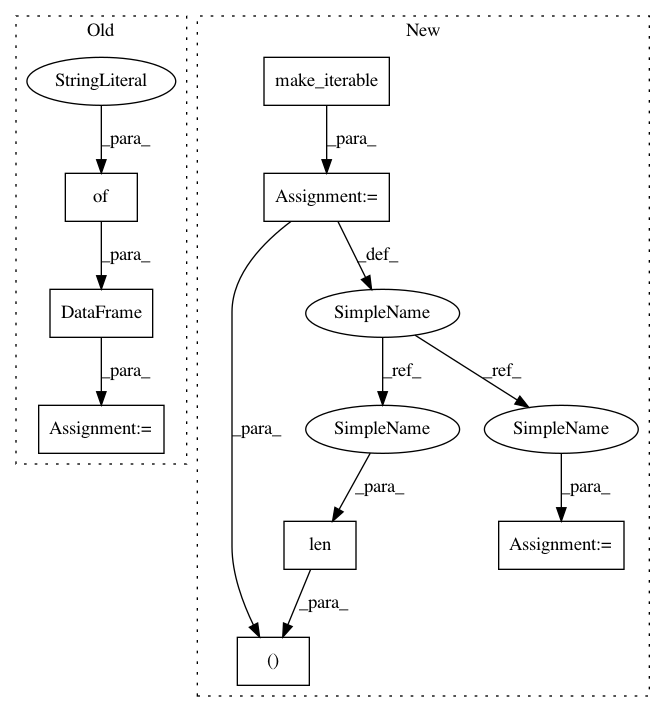

f41ef99d652c20007e301998603d28de0ac01cdd,ggplot/stats/stat_vline.py,stat_vline,_calculate,#stat_vline#Any#Any#,15
Before Change
except TypeError as err:
raise GgplotError(*err.args)
new_data = pd.DataFrame({"xintercept": xintercept})
new_data["x"] = new_data["xintercept"]
new_data["xend"] = new_data["xintercept"]
return new_data
After Change
except TypeError as err:
raise GgplotError(*err.args)
xintercept = make_iterable(xintercept)
data = data.iloc[range(len(xintercept)), :]
data["xintercept"] = xintercept
data["x"] = data["xintercept"]
data["xend"] = data["xintercept"]
return data
In pattern: SUPERPATTERN
Frequency: 3
Non-data size: 8
Instances
Project Name: has2k1/plotnine
Commit Name: f41ef99d652c20007e301998603d28de0ac01cdd
Time: 2015-04-20
Author: has2k1@gmail.com
File Name: ggplot/stats/stat_vline.py
Class Name: stat_vline
Method Name: _calculate
Project Name: has2k1/plotnine
Commit Name: f41ef99d652c20007e301998603d28de0ac01cdd
Time: 2015-04-20
Author: has2k1@gmail.com
File Name: ggplot/stats/stat_hline.py
Class Name: stat_hline
Method Name: _calculate
Project Name: has2k1/plotnine
Commit Name: f41ef99d652c20007e301998603d28de0ac01cdd
Time: 2015-04-20
Author: has2k1@gmail.com
File Name: ggplot/stats/stat_abline.py
Class Name: stat_abline
Method Name: _calculate